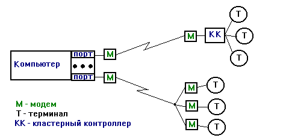
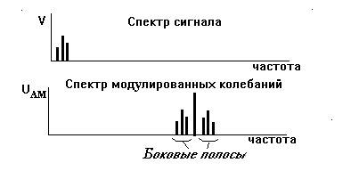
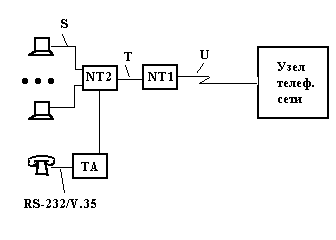
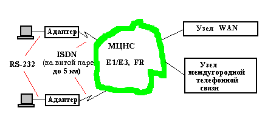
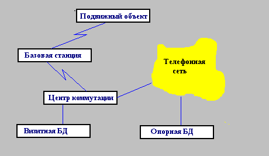

Каналы передачи данных
1. Основные определения. Среда передачи данных - совокупность линий передачи данных и блоков взаимодействия (т.е. сетевого оборудования, не входящего в станции данных), предназначенных для передачи данных между станциями данных. Среды передачи данных могут быть общего пользования или выделенными для конкретного пользователя.
Линия передачи данных - средства, которые используются в информационных сетях для распространения сигналов в нужном направлении. Примерами линий передачи данных являются коаксиальный кабель, витая пара проводов, световод.
Характеристиками линий передачи данных являются зависимости затухания сигнала от частоты и расстояния. Затухание принято оценивать в децибеллах, 1 дБ = 10*lg(P1/P2), где Р1 и Р2 - мощности сигнала на входе и выходе линии соответственно.
При заданной длине можно говорить о полосе пропускания (полосе частот) линии. Полоса пропускания связана со скоростью передачи информации. Различают бодовую (модуляционную) и информационную скорости. Бодовая скорость измеряется в бодах, т.е. числом изменений дискретного сигнала в единицу времени, а информационная - числом битов информации, переданных в единицу времени. Именно бодовая скорость определяется полосой пропускания линии.
Если на бодовом интервале (между соседними изменениями сигнала) передается N бит, то число градаций модулируемого параметра несущей равно 2N. Например, при числе градаций 16 и скорости 1200 бод одному боду соответствует 4 бит/с и информационная скорость составит 4800 бит/с.
Максимально возможная информационная скорость V связана с полосой пропускания F канала связи формулой Хартли-Шеннона (предполагается, что одно изменение величины сигнала приходится на log2k бит, где k - число возможных дискретных значений сигнала)
V = 2*F*log2k бит/с,
так как V = log2k/t, где t - длительность переходных процессов, приблизительно равная 3*ТВ, а ТВ = 1/(2*p *F), Здесь k ? 1+A, A - отношение сигнал/помеха.
Канал (канал связи) - средства односторонней передачи данных. Примером канала может быть полоса частот, выделенная одному передатчику при радиосвязи. В некоторой линии можно образовать несколько каналов связи, по каждому из которых передается своя информация. При этом говорят, что линия разделяется между несколькими каналами. Существуют два метода разделения линии передачи данных: временное мультиплексирование (иначе разделение по времени или TDM), при котором каждому каналу выделяется некоторый квант времени, и частотное разделение (FDM - Frequency Division Method), при котором каналу выделяется некоторая полоса частот.
Канал передачи данных - средства двустороннего обмена данными, включающие АКД и линию передачи данных.
По природе физической среды передачи данных (ПД) различают каналы передачи данных на оптических линиях связи, проводных (медных) линиях связи и беспроводные. В свою очередь, медные каналы могут быть представлены коаксиальными кабелями и витыми парами, а беспроводные - радио- и инфракрасными каналами.
В зависимости от способа представления информации электрическими сигналами различают аналоговые и цифровые каналы передачи данных. В аналоговых каналах для согласования параметров среды и сигналов применяют амплитудную, частотную, фазовую и квадратурно-амплитудную модуляции. В цифровых каналах для передачи данных используют самосинхронизирующиеся коды, а для передачи аналоговых сигналов - кодово-импульсную модуляцию.
Первые сети ПД были аналоговыми, поскольку использовали распространенные телефонные технологии. Но в дальнейшем устойчиво растет доля цифровых коммуникаций (это каналы типа Е1/Т1, ISDN, сети Frame Relay, выделенные цифровые линии и др.)
В зависимости от направления передачи различают каналы симплексные (односторонняя передача), дуплексные (возможность одновременной передачи в обоих направлениях) и полудуплексные (возможность попеременной передачи в двух направлениях).
В зависимости от числа каналов связи в аппаратуре ПД различают одно- и многоканальные средства ПД. В локальных вычислительных сетях и в цифровых каналах передачи данных обычно используют временное мультиплексирование, в аналоговых каналах - частотное разделение.
Если канал ПД монопольно используется одной организацией, то такой канал называют выделенным, в противном случае канал является разделяемым или виртуальным (общего пользования).
К передаче информации имеют прямое отношение телефонные сети, вычислительные сети передачи данных, спутниковые системы связи, системы сотовой радиосвязи.
2. Проводные линии связи. В вычислительных сетях проводные линии связи представлены коаксиальными кабелями и витыми парами проводов.
Используются коаксиальные кабели: "толстый" диаметром 12,5 мм и "тонкий" диаметром 6,25 мм. "Толстый" кабель имеет меньшее затухание, лучшую помехозащищенность, что обеспечивает возможность работы на больших расстояниях, но он плохо гнется, что затрудняет прокладку соединений в помещениях, и дороже "тонкого".
Существуют экранированные (STP - Shielded Twist Pair) и неэкранированные (UTP - Unshielded Twist Pair) витые пары проводов. Экранированные пары сравнительно дороги. Неэкранированные витые пары имеют несколько категорий (типов). Обычный телефонный кабель - пара категории 1. Пара категории 2 может использоваться в сетях с пропускной способностью до 4 Мбит/с. Для сетей Ethernet (точнее, для ее варианта с названием 10Base-T) разработана пара категории 3, а для сетей Token Ring - пара категории 4. Наиболее совершенной является витая пара категории 5, которая применима при частотах до 100 МГц. В паре категории 5 проводник представлен медными жилами диаметром 0,51 мм, навитыми по определенной технологии и заключенными в термостойкую изолирующую оболочку. В высокоскоростных ЛВС на UTP длины соединений обычно не превышают 100 м. Затухание на 100 МГц и при длине 100 м составляет около 24 дБ, при 10 МГЦ и 100 м - около 7 дБ.
Витые пары иногда называют сбалансированной линией в том смысле, что в двух проводах линии передаются одни и те же уровни сигнала (по отношению к земле), но разной полярности. При приеме воспринимается разность сигналов, называемая парафазным сигналом. Синфазные помехи при этом самокомпенсируются.
3. Аналоговые каналы передачи данных. Типичным и наиболее распространенным типом аналоговых каналов являются телефонные каналы общего пользования (каналы тональной частоты). В каналах тональной частоты полоса пропускания составляет 0,3...3,4 кГц, что соответствует спектру человеческой речи.
Для передачи дискретной информации по каналам тональной частоты необходимы устройства преобразования сигналов, согласующие характеристики дискретных сигналов и аналоговых линий. Кроме того, в случае непосредственной передачи двоичных сигналов по телефонному каналу с полосой пропускания 0,3...3,4 кГц скорость передачи не превысит 3 кбит/с. Действительно, пусть на передачу одного бита требуются два перепада напряжения, а длительность одного перепада ТВ = (3...4)/(6,28*FВ), где FВ - верхняя частота полосы пропускания. Тогда скорость передачи есть В < 1/(2*ТВ).
Согласование параметров сигналов и среды при использовании аналоговых каналов осуществляется с помощью воплощения сигнала, выражающего передаваемое сообщение, в некотором процессе, называемом переносчиком и приспособленном к реализации в данной среде. Переносчик в системах связи представлен электромагнитными колебаниями U некоторой частоты, называемой несущей частотой:
U = Um*sin(v *t+y ),
где Um - амплитуда, v - частота, y - фаза колебаний несущей. Изменение параметров несущей (переносчика) по закону передаваемого сообщения называется модуляцией. Если это изменение относится к амплитуде Um, то модуляцию называют амплитудной (АМ), если к частоте v - частотной (ЧМ), и если к фазе y - фазовой (ФМ). При приеме сообщения предусматривается обратная процедура извлечения полезного сигнала из переносчика, называемая демодуляцией. Модуляция и демодуляция выполняются в устройстве, называемом модемом.
4. Модемы. Модем - устройство преобразования кодов и представляющих их электрических сигналов при взаимодействии аппаратуры окончания канала данных и линий связи. Слово "модем" образовано из частей слов "модуляция" и "демодуляция", что подчеркивает способы согласования параметров сигналов и линий связи - сигнал, подаваемый в линию связи, модулируется, а при приеме данных из линии сигналы подвергаются обратному преобразованию (рис. 2.1).

Более высокая скорость (до 1000 кбит/с на расстояниях до 100 м) обеспечивается интерфейсом RS-422, в котором используются две витые пары проводов с согласующими сопротивлениями на концах, образующие сбалансированную линию.
5. Амплитудная модуляция. При амплитудной модуляции на входы модулятора поступают сигнал V и несущая U. Например, если сигнал есть гармоническое колебание
V = Vm*sin(W *t+j )
с амплитудой Vm, частотой W и фазой j , то на выходе нелинейного элемента в модуляторе будут модулированные колебания
UАМ = Um*(1+m*sin(W *t+j ))*sin(v *t+y ),
где m = Vm/Um - коэффициент модуляции. На выходе модулятора в спектре сигнала присутствуют несущая частота v и две боковые частоты v +W и v -W . Если сигнал занимает некоторую полосу частот, то в спектре модулированного колебания появятся две боковые полосы, как это показано на рис. 2.2.

Рис. 2.2. Спектры модулирующего и модулированного сигналов при АМ
При амплитудной модуляции во избежание искажений, называемых качанием фронта, нужно выполнение условия v >> W , где v и W - соответственно несущая и модулирующая частоты. Соблюдение этого условия при стандартной (для среднескоростной аппаратуры передачи данных) несущей частоте 1700 Гц не может обеспечить информационные скорости выше 300 бит/с. Поэтому в модемах применяют дополнительное преобразование частоты: сначала производят модуляцию несущей, имеющей повышенную частоту, например Fнд = 10 кГц, затем с помощью фильтра выделяют спектр модулированного сигнала и с помощью преобразователя частоты переносят модулирующие колебания на промежуточную частоту, например 1700 Гц. Тогда при боковых полосах до 1400 Гц спектр сигнала согласуется с полосой пропускания телефонных линий. Однако достигаемые при этом скорости передачи данных остаются невысокими.
Скорости передачи повышаются с помощью квадратурно-амплитудной или фазовой модуляции за счет того, что вместо двоичных модулирующих сигналов используются дискретные сигналы с большим числом возможных значений.
6. Частотная и фазовая модуляции. В сравнительно простых модемах применяют частотную модуляцию (FSK - Frequency Shift Keying) со скоростями передачи до 1200 бит/с. Так, если необходима дуплексная связь по двухпроводной линии, то возможно представление 1 и 0 в вызывном модеме частотами 980 и 1180 Гц соответственно, а в ответном модеме - 1650 и 1850 Гц. При этом скорость передачи составляет 300 бод.
Обычно для передачи сигнала об ошибке от приемника к передатчику нужен канал обратной связи. При этом требования к скорости передачи данных по обратному каналу могут быть невысокими. Тогда в полосе частот телефонного канала образуют обратный канал с ЧМ, по которому со скоростью 75 бит/с передают 1 частотой 390 Гц и 0 частотой 450 Гц.
Фазовая модуляция (PSK - Phase Shift Keying) двумя уровнями сигнала (1 и 0) осуществляется переключением между двумя несущими, сдвинутыми на полпериода друг относительно друга. Другой вариант PSK изменение фазы на p /2 в каждом такте при передаче нуля и на 3/4*p , если передается единица.
7. Квадратурно-амплитудная модуляция. Квадратурно-амплитудная модуляция (QAM - Quadrature Amplitude Modulation, ее также называют квадратурно-импульсной) основана на передаче одним элементом модулированного сигнала n бит информации, где n = 4...8 (т.е. используются 16... 256 дискретных значений амплитуды). Однако для надежного различения этих значений амплитуды требуется малый уровень помех (отношение сигнал/помеха не менее 12 дБ при n = 4).
При меньших отношениях сигнал/помеха лучше применять фазовую модуляцию с четырьмя или восемью дискретными значениями фазы для представления соответственно 2 или 3 бит информации. Тогда при скорости модуляции в 1200 бод (т.е. 1200 элементов аналогового сигнала в секунду, где элемент - часть сигнала между возможными сменами фаз) и четырехфазной модуляции скорость передачи данных равна 2400 бит/с. Используются также скорости передачи 4800 бит/с (при скорости модуляции 1600 бод и восьмифазной модуляции), 9600 бит/с и более при комбинации фазовой и амплитудной модуляций.
8. Организация дуплексной связи. Для организации дуплексной связи используются следующие способы:
четырехпроводная линия связи - одна пара проводов для прямой и другая для обратной передачи;
частотное разделение - прямая и обратная передачи ведутся на разных частотах, т.е. полоса для каждого направления сужается более чем вдвое по сравнению с полосой симплексной связи;
эхо-компенсация - при установлении соединения с помощью посылки зондирующего сигнала определяются параметры (запаздывание и мощность) эха - отраженного собственного сигнала; в дальнейшем из принимаемого сигнала вычитается эхо собственного сигнала (рис.2.3).
Рис. 2.3. Эхо-компенсация
В современных телекоммуникационных технологиях большее распространение получили цифровые каналы передачи данных.
10. Протоколы физического уровня для модемной связи. Протоколы физического уровня определяют в телекоммуникационных технологиях способ модуляции, направленность передачи (дуплекс, симплекс, полудуплекс), ориентированность на выделенный или коммутируемый канал. Возможно отражение в протоколах и некоторых других характеристик передачи, например способа исправления ошибок и/или сжатия информации.
Протокол V.21 используется в простых модемах на 300 бит/с, применена частотная модуляция с передачей по двухпроводной линии. Используются четыре частоты (от 980 до 1850 Гц) для представления 1 и 0 в прямом и обратном направлениях передачи.
Протокол V.22 характеризуется скоростью 1200 бит/с, используются частотное разделение каналов (для дуплекса) и двукратная фазовая модуляция (ФМ), т.е. ФМ с четырьмя значениями фазы. В V.27 с помощью трехкратной ФМ (с восемью значениями фазы) достигается скорость 4800 бит/с по дуплексным выделенным каналам.
Возможно применение квадратурно-амплитудной модуляции. В протоколе V.22bis используются несущие частоты 1200 и 2400 Гц, при скорости модуляции 600 бод скорость передачи данных составляет 2400 бит/с, так как каждый элемент сигнала отражает одно из 16 значений четырехбитовой комбинации (для каждого значения - своя амплитуда). В протоколе V.29 скорость составляет 9600 бит/с, используется четырехпроводный выделенный канал.
В модемах, соответствующих V.32, достигается скорость 9600 бит/с за счет фазовой модуляции и отфильтровывания эха собственного передатчика от принимаемых сигналов. Специальный процессор автоматически снижает скорость передачи при наличии шумов в линии. Используется помехоустойчивое кодирование.
В протоколе V.32bis при тех же несущих и бодовой скорости пропускная способность повышена до 14,4 кбит/с за счет комбинирования квадратурно-амплитудной и фазовой модуляций. Расширение V.32terbo этого протокола уже рассчитано на скорости 16,8 и 19,2 кбит/с.
Современные высокоскоростные модемы строятся в соответствии с протоколом V.34 или его предшественником V.FC. Здесь скорости составляют от 2,4 до 28,8 кбит/с с шагом 2,4 кбит/с. Протокол предусматривает адаптацию передачи под конкретную обстановку, изменяя несущую в пределах 1600...2000 Гц, а также автоматическое предварительное согласование способов модуляции в вызывающем и вызывном модемах. В протоколе V34.bis скорости могут достигать 33,6 кбит/с.
В последнее время стали выпускаться модемы на 56 кбит/с по технологии, названной х2. Однако пока отсутствуют стандарты на х2 и двукратного ускорения передачи еще получить не удалось.
Протокол V.42 относится к стандартам, устанавливающим способы защиты от ошибок, а V.42bis, кроме того, - способы сжатия данных. Наряду с протоколом V.42, для коррекции ошибок применяют протоколы MNP (Microcom Network Protocol).
В качестве примера организации передачи сообщений рассмотрим протокол V.42, являющийся вариантом протокола HDLC.
Установление соединения (вход в протокол) происходит в асинхронном байт-ориентированном режиме. Запрос на соединение осуществляется посылкой двухбайтовых сигналов ОDP. Для соединения необходимо согласие приемника в виде посылки ответа ADP. После этого образуется соединение, осуществляется переход в синхронный бит-ориентированный режим. В начале сообщения передаются управляющие, а затем информационные кадры.
Краткие сведения о некоторых протоколах (двухпроводных на основе RS-232C) подытожены ниже (указаны имя протокола, способ модуляции, скорость в килобитах в секунду и возможно другие особенности).
В высокоскоростных выделенных каналах можно использовать аналоговые протоколы V.35, V.36, V.37, рассчитанные соответственно на скорости 48, 72, 168 кбит/с.
11. Протоколы канального уровня для модемной связи. Центральное место среди канальных протоколов телекоммуникаций занимают протоколы передачи файлов по телефонным каналам. Функции канальных протоколов: управление потоком данных, координация работы передатчика с приемником. Различают протоколы по способам обнаружения и исправления ошибок, по реакции на возникновение ошибок (старт-стопные и конвейерные), по способам защиты от несанкционированного доступа.
Способы обнаружения и исправления ошибок рассмотрены ниже.
Старт-стопный протокол характеризуется тем, что, прежде чем посылать новый кадр информации, передатчик ждет подтверждения о правильном получении приемником предыдущего кадра, в конвейерных протоколах такое подтверждение может быть получено после передачи нескольких кадров. В последнем случае меньше задержки на ожидание подтверждений (квитанций), но больше затраты на повторную пересылку в случае ошибок.
Защита от несанкционированного доступа реализуется или аппаратно в модеме, или в связной (коммутационной) программе.
Обычно в протоколах предусматриваются режимы командный и обмена данными.
Примеры действий, выполняемых по командам в командном режиме: имитация снятия трубки и ответ на вызов; имитация снятия трубки и набора номера (после того как связь установится, модем переходит в режим обмена данными); переход из дуплексного режима в полудуплексный; отключение внутреннего динамика модема и др.
Команды может набирать пользователь, но в большинстве почтовых программ типовые последовательности команд выполняются автоматически после обращения к соответствующим процедурам.
Стандартом "де-факто" стал набор команд, реализуемый фирмой Hayes в своих модемах, это так называемые AT- или Hayes-команды.
Операции, выполняемые в режиме обмена данными, иллюстрирует фрагмент процесса, показанный на рис. 2.4. Имеется ограничение на число подряд поданных сигналов ack или nak и на время передачи.
Рис. 2.4. Процесс связи по протоколу XModem
12. Кодово-импульсная модуляция. Кодово-импульсная модуляция (КИМ или PCM - Pulse Code Modulation) используется для передачи аналоговых сигналов по цифровым каналам связи.
Этот вид модуляции сводится к измерению амплитуды аналогового сигнала в моменты времени, отстоящие друг от друга на dt, и к кодированию этих амплитуд цифровым кодом. Величина dt определяется по теореме Котельникова: для неискаженной передачи нужно иметь не менее двух отсчетов на период колебаний, соответствующий высшей составляющей в частотном спектре сигнала. В цифровых каналах ISDN (Integrated Services Digital Network) за основу принята передача голоса с частотным диапазоном до 4 кГц, а кодирование производится восемью (или семью) битами. Отсюда получаем, что частота отсчетов (передачи байтов) равна 8 кГц, т.е. биты передаются с частотой 64 кГц (или 56 кГц при семибитовой кодировке).
При преобразовании амплитуды А аналогового сигнала в цифровой код К желательно учитывать нелинейность амплитудных характеристик приборов и иметь зависимость К от А мнонотонно убывающей с ростом амплитуды.
Разновидностями КИМ являются дельта-модуляция (ДМ), дифференциальная ДМ (ДДМ) и адаптивная ДМ (АДДМ). В них передаются разности амплитуд А1 и А2 соседних отсчетов. При этом в ДМ А1 - амплитуда на входе модулятора, а А2 - амплитуда отсчета, которая соответствует переданному сигналу в предыдущем временном такте. Для представления разности используется всего 1 бит (т.е. передается знак разности), поэтому нужна достаточно высокая частота отсчетов, чтобы не было "запаздывания" изменений передаваемого сигнала по сравнению с реальными изменениями.
ДДМ отличается от ДМ тем, что знак разности А1-А2 передается только в момент пересечения величиной А1 одного из уровней квантования. В АДДМ шаги отсчетов адаптируются к динамике изменения величины сигнала.
13. Цифровые каналы передачи данных. Различают несколько технологий связи, основанных на цифровых каналах передачи данных.
Связь ООД с АКД (например, компьютера с модемом или низкоскоростными периферийными устройствами) чаще всего осуществляется при помощи последовательных интерфейсов RS-232С, RS-422 (их аналогами в системе стандартов ITU являются V.24, V.11), а связь ООД с цифровыми сетями передачи данных - при помощи интерфейсов Х.21, X.35, G.703.
Примечание: Стандарты ITU серии V разрабатывались для передачи информации по телефонным линиям, а стандарты ITU серии X - для передачи данных.
В качестве магистральных каналов передачи данных в США и Японии применяют стандартную многоканальную систему Т1 (иначе DS-1). Она включает 24 цифровых канала, называемых DS-0 (Digital Signal-0). В каждом канале применена кодово-импульсная модуляция с частотой следования отсчетов 8 кГц и с квантованием сигналов по 28 = 256 уровням, что обеспечивает скорость передачи 64 кбит/с на один канал или 1554 кбит/с на аппаратуру Т1. В Европе более распространена аппаратура Е1 с 32 каналами по 64 кбит/с, т.е. с общей скоростью 2048 кбит/с. Применяются также каналы Т3 (или DS-3), состоящие из 28 каналов Т1 (45 Мбит/с) и Е3 (34 Мбит/с) преимущественно в частных высокоскоростных сетях.
В Т1 использовано временное мультиплексирование (TDM). Все 24 канала передают в мультиплексор по байту, образуя 192-битный кадр с добавлением одного бита синхронизации. 24 кадра составляют суперкадр. В суперкадре имеются контрольный код и синхронизирующая комбинация. Сборку информации из нескольких линий и ее размещение в магистрали Т1 осуществляет мультиплексор. Канал DS-0 (один слот) соответствует одной из входных линий, т.е. реализуется коммутация каналов. Некоторые мультиплексоры позволяют маршрутизировать потоки данных, направляя их в другие мультиплексоры, связанные с другими каналами Т1, хотя собственно каналы Т1 называют некоммутируемыми.
При обычном мультиплексировании каждому соединению выделяется определенный слот (например, канал DS-0). Если же этот слот не используется из-за недогрузки канала по этому соединению, но по другим соединениям трафик значительный, то эффективность невысокая. Загружать свободные слоты или, другими словами, динамически перераспределять слоты можно, используя так называемые статистические мультиплексоры на основе микропроцессоров. В этом случае временно весь канал DS-1 или его часть отдается одному соединению с указанием адреса назначения.
В современных сетях важное значение имеет передача как данных, представляемых дискретными сигналами, так и аналоговой информации (например, голос и видеоизображения первоначально имеют аналоговую форму). Поэтому для многих применений современные сети должны быть сетями интегрального обслуживания. Наиболее перспективными сетями интегрального обслуживания являются сети с цифровыми каналами передачи данных, например, сети ISDN.
Сети ISDN могут быть коммутируемыми и некоммутируемыми. Различают обычные ISDN со скоростями от 56 кбит/с до 1,54 Мбит/с и широкополосные ISDN (Broadband ISDN, или B-ISDN) со скоростями 155... 2048 Мбит/с. Более перспективны B-ISDN, в настоящее время технология B-ISDN активно осваивается.
Применяют два варианта обычных сетей ISDN - базовый и специальный. В базовом варианте имеются два канала по 64 кбит/с (эти каналы называют В каналами) и один служебный канал с 16 кбит/с (D канал). В специальном варианте - 23 канала В по 64 кбит/с и один или два служебных канала D по 16 кбит/с. Каналы В могут использоваться как для передачи закодированной голосовой информации (коммутация каналов), так и для передачи пакетов. Служебные каналы используются для сигнализации - передачи команд, в частности, для вызова соединения. Применяют специальные сигнальные системы, устанавливающие перечень и форматы команд. В настоящее время основной сигнальной системой становится система SS7 (Signaling System-7).
Очевидно, что для реализации технологий Т1, Т3, ISDN необходимо выбирать среду передачи данных с соответствующей полосой пропускания.
Схема ISDN показана на рис. 2.5. Здесь S-соединение - 4-проводная витая пара. Если оконечное оборудование не имеет интерфейса ISDN, то оно подключается к S через специальный адаптер ТА. Устройство NT2 объединяет S-линии в одну Т-шину, которая имеет два провода от передатчика и два - к приемнику. Устройство NT1 реализует схему эхо-компенсации (рис. 2.3) и служит для интерфейса Т-шины с обычной телефонной двухпроводной абонентской линией U.

Рис. 2.5. Схема ISDN.
Примером цифровой сети может служить Московская цифровая наложенная сеть (МЦНС), структура которой представлена на рис. 2.6. Здесь, как и во многих других применениях цифровых каналов, Т1/Е1 выполняет роль магистрального канала передачи данных между узловыми станциями (центрами коммутации), а сеть ISDN используется для подключения к магистрали и поэтому носит название соединения "последней мили".

14. Беспроводные каналы связи. В беспроводных каналах передача информации осуществляется на основе распространения радиоволн. В табл. 2.1 приведены сведения о диапазонах электромагнитных колебаний, используемых в беспроводных и оптических каналах связи.
Таблица 2.1
| Диапазон | Длины волн, м | Частоты, ГГц | Применение |
| Дециметровый |
|
|
|
| Сантиметровый |
|
|
|
| Миллиметровый |
|
|
РК в ЛВС |
| Инфракрасный |
|
|
ВОЛС, WDМ** |
| Видимый свет |
|
|
|
| *)
РК в ЛВС - радиоканалы в локальных сетях и системах связи;
**) WDM - мультиплексирование с разделением каналов по длинам волн. |
|||
Для организации канала ПД в диапазонах дециметровых волн (902...928 МГц и 2,4...2,5 ГГц) требуется регистрация в Госсвязьнадзоре. Работа в диапазоне 5,725...5,85 ГГц пока лицензирования не требует.
Чем выше рабочая частота, тем больше емкость (число каналов) системы связи, но тем меньше предельные расстояния, на которых возможна прямая передача между двумя пунктами без ретрансляторов. Первая из причин и порождает тенденцию к освоению новых более высокочастотных диапазонов.
Радиоканалы входят необходимой составной частью в спутниковые и радиорелейные системы связи, применяемые в территориальных сетях, в сотовые системы мобильной связи, они используются в качестве альтернативы кабельным системам в локальных сетях и при объединении сетей отдельных офисов и предприятий в корпоративные сети. Во многих случаях применение радиоканалов оказывается более дешевым решением по сравнению с другими вариантами.
В территориальных сетях на региональном уровне часто используются радиорелейные линии связи (коммутация каналов, диапазон частот 15...23 ГГц, связь в пределах прямой видимости, что ограничивает дальность между соседними станциями - до 50 км при условии размещения антенн на строениях типа башен). Последовательность станций, являющихся ретрансляторами, позволяет передавать информацию на значительные расстояния.
Радиосвязь используется в корпоративных и локальных сетях, если затруднена прокладка других каналов связи. Радиоканал либо выполняет роль моста между подсетями (двухточечное соединение), либо является общей средой передачи данных в ЛВС по излагаемому далее методу МДКН/ОК (см. гл. 4), либо служит соединением между центральным и терминальными узлами в сети с централизованным управлением.
В первом случае (связь двух сетей) имеем двухточечное соединение с направленными антеннами, дальность в пределах прямой видимости (обычно до 15-20 км с расположением антенн на крышах зданий). Мост имеет два адаптера: один для формирования сигналов для радиоканала, другой - для кабельной подсети.
В случае использования радиоканала в качестве общей среды передачи данных в ЛВС сеть называют RadioЕthernet (стандарт IEEE 802.11), она обычно используется внутри зданий. В состав аппаратуры входят приемопередатчики и антенны. Связь осуществляется на частотах от одного до нескольких гигагерц. Расстояния между узлами - несколько десятков метров.
В соответствии со стандартом IEEE 802.11 возможны два способа передачи двоичной информации в ЛВС, оба они имеют целью обеспечить защиту информации от нежелательного доступа.
Первый способ нзывается методом прямой последовательности (DSSS - Direct Sequence Spread Spectrum). В нем вводится избыточность - каждый бит данных представляется последовательностью из 11 элементов ("чипов"). Эта последовательность создается по алгоритму, известному участникам связи, и потому может быть дешифрирована при приеме. Избыточность повышает помехоустойчивость, что позволяет снизить требования к мощности передатчика, а для сохранения высокой скорости нужно расширять полосу пропускания. Так, в аппаратуре фирмы Aironet в диапазоне 2,4 ГГц имеются 4 канала шириной в 22 МГц.
Второй способ - метод частотных скачков (FHSS - Frequency Hopping Spread Spectrum). В этом методе полоса пропускания делится на 79 поддиапазонов. Передатчик через каждые 20 мс переключается на новый поддиапазон, причем алгоритм изменения частот известен только участникам связи и может изменяться, что и затрудняет несанкционированный доступ к данным.
В варианте использования радиоканалов для связи центрального и периферийного узлов центральный пункт имеет ненаправленную антенну, а терминальные пункты при этом используют направленные антенны. Дальность связи составляет также десятки метров, а вне помещений - сотни метров. Пример многоточечной системы: ненаправленная антенна по горизонтали, угол 30 градусов по вертикали, 5,8 ГГц - к терминалам, 2,4 ГГц - к центральному узлу, до 62 терминалов, дальность - 80 м без прямой видимости. В системе RoomAbout связь на частоте 920 МГц гарантируется на расстоянии в 120 метров, предусмотрена защита от перехвата информации.
В условиях высоких уровней электромагнитных помех иногда используют инфракрасные каналы связи. В последнее время их стали применять не только в цехах, но и в офисах, где лучи можно направлять над перегородками помещения.
Поставкой оборудования для организации корпоративных и локальных беспроводных сетей занимается ряд фирм, в том числе известные фирмы Lucent Technologies, Aironet, Multipoint Network.
В оборудование беспроводных каналов ПД входят:
Сетевые адаптеры и радиомодемы, поставляемые вместе с комнатными антеннами и драйверами. Различаются способами обработки сигналов, характеризуются частотой передачи, пропускной способностью, дальностью связи.
Сетевой адаптер вставляется в свободный разъем шины компьютера. Например, адаптер WaveLAN (Lucent Technologies) подключается к шине ISA, работает на частоте 915 МГц, пропускная способность 2 Мбит/с.
Радиомодем подключается к цифровому ООД через стандартный интерфейс. Например, радиомодемы серии RAN (Multipoint Networks) могут работать в дуплексном или полудуплексном режимах; со сторны порта данных -интерфейс RS-232C, RS-449 или V.35, скорости до 128 кбит/с; со стороны радиопорта - частоты 400...512 или 820...960 МГц, ширина радиоканала 25...200 кГц.
Структура спутниковых каналов передачи данных может быть проиллюстрирована на примере широкоизвестной системы VSAT (Very Small Aperture Terminal). Наземная часть системы представлена совокупностью комплексов, в состав каждого из них входят центральная станция (ЦС) и абонентские пункты (АП). Связь ЦС со спутником происходит по радиоканалу (пропускная способность 2 Мбит/с) через направленную антенну диаметром 1...3 м и приемопередающую аппаратуру. АП подключаются к ЦС по схеме "звезда" с помощью многоканальной аппаратуры (обычно это аппаратура Т1 или Е1, хотя возможна и связь через телефонные линии) или по радиоканалу через спутник. Те АП, которые соединяются по радиоканалу (это подвижные или труднодоступные объекты), имеют свои антенны, и для каждого АП выделяется своя частота. ЦС передает свои сообщения широковещательно на одной фиксированной частоте, а принимает на частотах АП. Арендная плата за соединение "точка-точка" через VSAT cо скоростью 64 кбит/с составляет около 3900 долл. в месяц, что для больших расстояний дешевле, чем аренда выделенной наземной линии.
Примерами российских систем спутниковой связи с геостационарными орбитами могут служить системы Инмарсат и Runnet. Так, в Runnet применяются геостационарные спутники "Радуга". Один из них, с точкой стояния 85 градусов в.д., охватывает почти всю территорию России. В качестве приемопередающей аппаратуры (ППА) используются станции "Кедр-М" или "Калинка", работающие в сантиметровом диапазоне волн (6,18...6,22 ГГц и 3,855...3,895 ГГц соответственно). Диаметр антенн 4,8 м. Структура ЦС представлена на рис. 2.7.
В планируемой фирмой LMI на 1998-2001 г.г. системе глобальной спутниковой связи предусматривается 4 геостационарных спутника. В России для этой системы будет установлено 26-30 наземных станций (оператор Ростелеком).
Примеры сетей с низкоорбитальными спутниками - система глобальной спутниковой телефонной связи "Глобалстар". 48 низкоорбитальных (высота 1400 км) спутников охватывают весь земной шар. Каждая станция (наземная) имеет одновременно связь с тремя спутниками. У спутника шесть сфокусированных лучей по 2800 дуплексных каналов каждый. Обеспечиваются телефонная связь для труднодоступных районов, навигационные услуги, определение местонахождения подвижных объектов. Терминал обойдется в 750 долл., минута разговора в 30-50 центов. Начало коммерческой эксплуатации намечено на 1999 г. Другая глобальная спутниковая сеть Iridium, имеющая и российский сегмент, включает 66 низкоорбитальных спутников, диапазон частот 1610-1626,5 МГц. В российской системе Глоснасс - 24 спутника.
В 1997 г. 30% международного трафика проходило по спутниковым каналам, 70% - по наземным линиям.
Рис. 2.7. Схема спутниковой связи
Пейджинг - система односторонней связи, при которой передаваемое сообщение поступает на пейджер пользователя, извещая его о необходимости предпринять то или действие или просто информируя его о тех или иных текущих событиях. Это наиболее дешевый вид мобильной связи (цена пейджера - около 150 долларов, абонентская плата - 15-50 долларов в месяц).
Твейджинг - это двухстронний пейджинг. В отличие от пейджинга возможно подтверждение получения сообщения и даже проведение некоторого подобия диалога. Цена твйеджера - около 300 долларов, месячная абонентская плата - около 80 долларов.
Сотовые технологии обеспечивают телефонную связь между подвижными абонентами (ячейками). Связь осуществляется через посредство базовых (стационарных) станций, выполняющих коммутирующие функции.
Одна из первых систем сотовой связи NMT-450 появилась в Скандинавии,(NMT - Nordic Mobile Telephone). В России она развивается c 1991 г. , на ее базе создана федеральная сеть сотовой связи СОТЕЛ.
NMT-450 - система аналоговая, работающая в частотном диапазоне 453-468 МГц. Сравнительно низкие частоты обусловливают повышенную дальность прямой связи ( несколько десятков километров подвижного объекта от базовой станции) и потому в России с ее большой территорией эта система получила широкое распространение в районах с невысокой плтностью населения. Однако на этих частотах слабее помехоустойчивость, труднее выполнить защиту от подслушивания и, как уже сказано выше, остро ощущуется дефицит числа каналов.
Поэтому в городах в настоящее время более распространены цифровые системы сотовой связи.
Диапазон скоростей в цифровых системах сотовой связи довольно широк - от 19,2 кбит/с (в американском стандарте CDPD - Cellular Digital Packet Data) до 1,23 Мбит/с (в другом стандарте CDMA - Code Division Multiple Access). Типичный радиус действия 10...12 км. Доступ к радиоканалу осуществляется одним из следующих способов.
1. Случайный доступ (метод Алоха, назван так в связи с первым применением метода для связи между группой Гавайских островов). Применяется только при малых нагрузках. Его развитием стал метод МДКН/ОК , используемый в локальных и корпоративных сетях.
2. Технология CDMA - выделение для каждого абонента своей кодовой комбинации, которой кодируются символы 1 и 0 передаваемых сообщений. Фактически это метод DSSS, рассмотренный выше. Это широкополосная технология с возможностью одновременной передачи в отведенной полосе частот нескольких сообщений с различными кодами символов.
3. Технология TDMA (Time Division Multiple Access) - временное мультиплексирование с выделением слота по требованию. Требования отсылаются в короткие интервалы времени (слоты запросов), при коллизиях запросы повторяются. Базовая станция выделяет свободные информационные слоты, сообщая их источнику и получателю.
Разработано несколько стандартов мобильной связи.
Одна из концепций передачи данных по сотовой технологии зафиксирована в стандарте CDPD, разработанном в 1993 г. В соответствии с ней по сотовой связи осуществляется передача телефонных разговоров с вставкой в паузы передаваемых пакетов данных. Оборудование ячейки - портативный компьютер с модемом. Для уменьшения потребления энергии от источника питания используется "спящий" режим, в котором включен только приемный блок, распознающий адрес. При передаче данные сжимаются (по протоколу V.42bis) и шифруются. Возможно использование клиентской программы электронной почты (например, RadioMail). Если ячейка имеет IP-адрес для связи с сетью Internet, то дополнительно можно использовать протокол FTP этой сети для пересылки файлов. Сигналы от ячеек принимаются стационарным узлом, имеющим приемопередающую аппаратуру и антенну.
В европейском стандарте цифровой беспроводной связи DECT применено временное мультиплексирование. Базовая станция (рис. 2.8) имеет 10 несущих частот с 24 ячейками (слотами) на каждой из них (т.е. одновременно используются и FDM, и TDM). Предусмотрены автоматический поиск свободного канала и переключение на новые каналы. Частоты в диапазоне 1,8...1,9 ГГц. Мощность передатчика базовой станции 10 мВт или выше.

Архитектура GSM-системы аналогична архитектуре рис. 2.8. В каждой соте действует базовая станция BTS (Base Transciever Station), обеспечивающая прием и передачу радиосигналов абонентам. BTS имеет диапазон частот, отличный от диапазонов соседних сот. Мобильная ячейка прослушивает соседние BTS и сообщает контроллеру базовых станций (BSC - Base Station Controller) о качестве приема с тем, чтобы BSC мог своевременно переключить ячейку на нужную BTS. Центр коммутации (MSC - Mobile services Switching Centre) осуществляет коммутацию и маршрутизацию, направляя вызовы нужному абоненту, в том числе во внешние сети общего пользования. В базе данных хранятся сведения о местоположении пользователей, технических характеристиках мобильных станций, данные для идентификации пользователей.
В перспективе предполагается использовать широкополосный B-ISDN на основе стандарта UMTS (Universal Mobile Telecommunication Systems) с глобальным роумингом.
Мобильная связь для предприятий (т.е. ведомственная или профессиональная) может отличаться от сотовой связи индивидуальных пользователей. Такую ведомственную связь называют транкинговой (или транковой). Для транкинговой связи характерны следующие особенности:
Наиболее распространены два протокола транкинговой связи: аналоговый МРТ-1327 и цифровой TETRA.
В иерархической структуре системы транкинговой связи используются базовые станции (BS) и центры коммутации (DXT). BS обслуживает одну зону и имеет от одной до нескольких несущих частот, отличных от частот соседних зон. В TETRA применяется метод TDMA с несколькими слотами на каждой из несущих. Так, в системе TETRA Nokia используется 64 несущих и 256 радиоканалов. В системах, работающих по протоколу МРТ-1327, обычно используется несколько частотных поддиапазонов в пределах 80-800 МГц с выделением каналов шириной в 12,5 кГц. Очевидно, что чем меньше частота, тем больше площадь охватываемой зоны, но меньше число каналов.
17. Оптические линии связи. Оптические линии связи реализуются в виде волоконно-оптических линий связи (ВОЛС). Конструкция ВОЛС - кварцевый сердечник диаметром 10 мкм, покрытый отражающей оболочкой с внешним диаметром 125...200 мкм. Типичные характеристики ВОЛС: работа на волнах 0,85...1,55 мкм, затухание 0,7 дБ/км, полоса частот - до 2 ГГц; ориентировочная цена - 4...5 долл. за 1 м. Предельные расстояния D для передачи данных по ВОЛС (без ретрансляции) зависят от длины волны излучения L: для L=850 нм имеем D=5км, а для L=1300 нм D=50 км, но аппаратурная реализация дороже.
ВОЛС являются основой высокоскоростной передачи данных, особенно на большие расстояния. Так, в настоящее время (1997 г.) реализуется проект кругосветного канала передачи данных на ВОЛС длиной в 27,3 тыс. км, кабель должен пройти по дну трех океанов, Средиземного и Красного морей, информационная скорость 5,3 Гбит/с.
Именно на ВОЛС достигнуты рекордные скорости передачи информации. В экспериментальной аппаратуре с использованием метода мультиплексирования с разделением каналов по длинам волн (WDM - Wavelengths Division Multiplexing) достигнута скорость 1100 Гбит/с на расстоянии 150 км. В одной из действующих систем на основе WDM передача идет со скоростью 40 Гбит/с на расстояния до 320 км.
В методе WDM выделяется несколько
несущих частот (каналов). Так, в последней упомянутой системе имеются 16
таких каналов вблизи частоты 4*105 ГГц,
отстоящих друг от друга на 103 ГГц, в каждом
канале достигается скорость 2,5 Гбит/с.
(возврат
в титульную страницу)